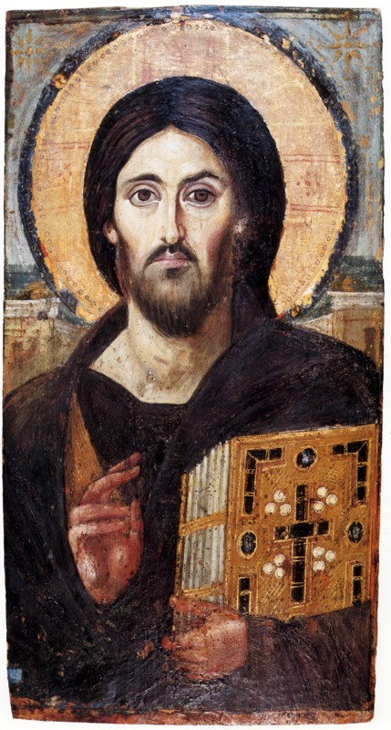

Faith
Spiritual Fellowship
Supporting doctors and healthcare workers in integrating their Catholic faith with everyday medical practice, ethics, and patient care.
The Catholic Medical Association of Lubbock unites physicians, healthcare professionals, residents, and medical students across West Texas in upholding the dignity of the human person from conception to natural end.
“Divine Physician, who in your earthly life showed special concern for those who suffer... make us ever ready to alleviate the trials of our brethren.”Read Full Prayer →
Forming a community of conscience, compassion, and professional excellence.
Supporting doctors and healthcare workers in integrating their Catholic faith with everyday medical practice, ethics, and patient care.
Walking alongside Texas Tech University Health Sciences Center (TTUHSC) medical, nursing, and pharmacy students facing modern ethical dilemmas.
Promoting Hippocratic medicine and defending the sacred dignity of every patient from conception to natural death in hospitals and clinics.
Bestowed by Pope Saint John Paul II • The Vatican, June 29, 2000

Lord Jesus,
Divine Physician, who in your earthly life showed special concern for those who suffer and entrusted to your disciples the ministry of healing, make us ever ready to alleviate the trials of our brethren. Make each one of us, aware of the great mission that is entrusted to him, strive always to be, in the performance of daily service, an instrument of your merciful love. Enlighten our minds, guide our hands, make our hearts diligent and compassionate. Ensure that in every patient we know how to discern the features of your divine Face.
You who are the Way, provide us with the gift of knowing how to imitate you every day as medical doctors not only of the body but of the whole person, helping those who are sick to tread with trust their own earthly path until the moment of their encounter with You.
You who are the Truth, provide us with the gift of wisdom and science in order to penetrate the mystery of the human person and their transcendent destiny as we draw near to them in order to discover the causes of their maladies and find suitable remedies.
You who are the Life, provide us with the gift of preaching and bearing witness to the 'Gospel of life' in our profession, committing ourselves to defending it always, from conception to its natural end, and to respect the dignity of every human being, and especially the dignity of the weakest and the most in need.
Make us O Lord, Good Samaritans, ready to welcome, treat, and console those we encounter in our work. Following the example of the holy medical doctors who have preceded us, help us to offer our generous contribution to the constant renewal of health care structures.
Bless our studies and our profession, enlighten our research and our teaching. Lastly, grant to us, having constantly loved and served You in our suffering brethren, that at the end of our earthly pilgrimage we may contemplate your glorious countenance and experience the joy of the encounter with You in your Kingdom of joy and everlasting peace. Amen.
Honoring the physicians who first gathered to establish the Lubbock CMA Guild.
In 1997, as the national organization transitioned from the National Federation of Catholic Physicians Guilds to the Catholic Medical Association, local physicians in Lubbock established the guild to provide camaraderie, bioethical guidance, and faithful witness across the healthcare institutions of the South Plains.
Under the leadership of clinicians including Dr. Kenneth E. Kruczek, Deacon Dr. Benny Phillips, and Dr. Gary Simmons, the guild established annual White Masses, patient referral directories, and student engagement with the Texas Tech University Health Sciences Center.
Today, this renewed digital presence honors that continuous mission: providing healthcare rooted in genuine love for God and neighbor.
Dedicated physician and advocate for ethical clinical care and guild fellowship in Lubbock.
Longtime champion of maternal health, natural procreative care, and the defense of human life.
Respected educator and pathologist committed to scientific truth, research, and Catholic formation.
Preserved photographs from the original cmalubbock.org historical collections.
Connect with Catholic physicians, specialists, dentists, and allied healthcare professionals in Lubbock and surrounding counties.
Lubbock Sports Medicine & Rehab
Address: 4110 22nd Place, Lubbock, TX 79410
Phone: (806) 792-4329
Texas Tech Physicians of Lubbock
Address: 4004 82nd St, Ste. C, Lubbock, TX 79423
Phone: (806) 743-7800
Lubbock Practice
Address: 3506 21st Street, Ste. 605, Lubbock, TX 79410
Phone: (806) 725-4130
Lubbock Practice
Address: 3621 22nd Street, Lubbock, TX 79410
Phone: (806) 796-1317
Pathology Consultation
Address: 4005 24th St., Lubbock, TX 79410
Phone: (806) 792-2767
Are you a Catholic physician, dentist, nurse, or therapist in Lubbock? Join the directory.
Submit Your Practice ListingUniting for prayer, fellowship, and continuing formation.
Celebrated annually for all healthcare personnel: doctors, nurses, technicians, residents, and medical students. White coats encouraged.
Evenings of discussion on end-of-life care, Catholic reproductive technology ethics, and conscience rights in modern medicine.
Connecting established Lubbock Catholic practitioners with TTUHSC medical students seeking faithful mentors in residency matching.
Whether you are an active physician, retired clinician, nurse, dental practitioner, resident, or TTUHSC medical student, there is a place for you in our fellowship.
The Catholic Medical Association is the largest association of Catholic physicians and healthcare professionals in North America. Visit cathmed.org for national conferences and journals.